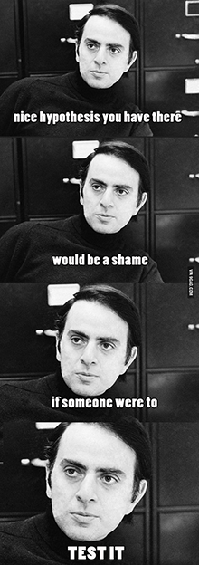
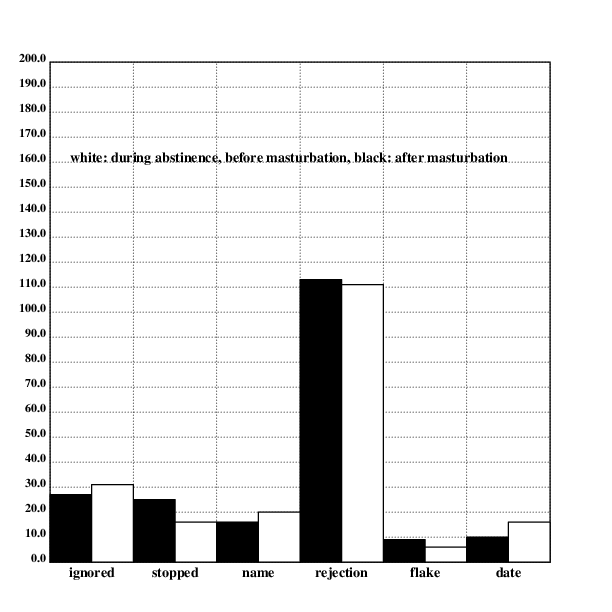
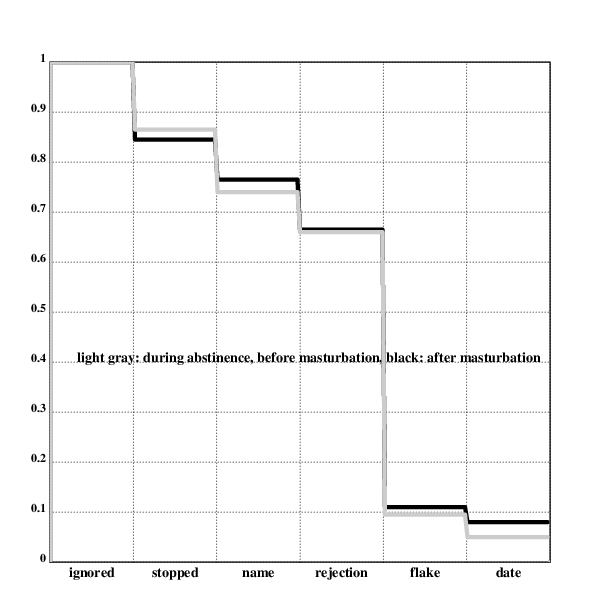

author: niplav, created: 2019-08-03, modified: 2024-07-05, language: english, status: draft, importance: 2, confidence: likely
Members of the NoFap community frequently claim that abstinence from masturbation causally increases male attractiveness.
I present a method to test this claim (albeit imperfectly) by approaching 100 women in the street after >90 days of abstinence from masturbation and after a short conversation asking them for their contact information, and 100 again after a week of daily masturbation. The results are analyzed using a Mann-Whitney U-test and various descriptive statistical methods and I find that _.
interesting things happen along borders—transitions—not in the middle where everything is the same
— Neal Stephenson, “Snow Crash”, 1992
Consider a question of burning importance: If a man abstains from masturbation for a long time, does other people's perception of him change as a result, even if they don't know he doesn't abstain? More poignantly, does he become more attractive to women, through some not-yet-understood process of microexpressions, pheromones, more confident gait &c?
To prevent the accusation of straw-manning the views of the NoFap community, I hereby present comments that broadly make the claim that "male abstinence from masturbation results in higher attractiveness, even with fixed behavior."
The comments below were found by searching the /r/NoFap subreddit on reddit (one of the biggest NoFap communities on the internet) for the keywords "attractiveness" and "attractive" and collecting comments and posts from NoFap members that claim the practice had a positive influence on their attractiveness. Because the comments were hand-picked (with regard to the number upvotes), I tried including critical views or negative reports when they arose in the comment threads to present an even-handed picture of the views of the community.
Of course, a survey would have been more informative.
Yesterday i was at a party and im currently on 12 days nofap. Normally this really never happens but a girl wanted to Kiss me. I think it was because of nofap.
— marijn420_gotu, “Nofap really makes you more attractive” on /r/NoFap (27 upvotes), 2019
Another user recounts a similar story:
I’m minding my own business in the laundromat, keeping to myself, this girl walks up to me and asks me if I can drop her off to her house, that she lives 2 minutes away. I look at her and ask her what made her come up to a complete stranger and ask such a thing, she says she doesn’t know, we have a little laugh. I drop her off, help her unload her laundry, and as I’m almost driving off she asks me if I need to head back, which I did, my laundry had 10 minutes left in the wash. I realized as I driving away that this stranger was literally inviting me in her house to get smashed, but I was genuinely trying to her [sic], I had no ulterior motives, and I wasn’t even that attracted to her. They literally smell it on you. I’m also 119 days hard mode. This shit is crazy.
— TheMasterKey20, “They smell it on you.” /r/NoFap (237 upvotes), 2019
Note that the poster does not mention any specific action on his side.
A commenter suspects: "Must be able to smell the pheromones." (23 upvotes). Another user makes a similar claim.
There are also strong claims on a direct relation between masturbation and attractiveness:
I was on a 10 day streak before I took a week off from work. When returning people were saying "I look tired" (I Fapped 5 times in the 2 days before returning to work). And the chick that I work with that is normally all walkative and flirty with me was not so much and seemed to act like I wasn't even there LOL. […] On a 20 day streak one time I had one after another woman looking at me. I recall one was a receptionist at an office building and when I went in and walked up to her coworker she was just gazing at me almost that bite your lip look, and honestly looked like she was getting wet. […] It's almost comical how woman treat me when on a streak, and when off one. It's night and day different. […] off a streak or over ejaculation several times in a day, it seems woman look past me and don't ever look at me. I know it has something to do with the pheromones you emit when not spilling your seed needlessly all the time […].
— cee9, “Fapping ruins your attractiveness.” (95 upvotes), 2015
Note that all typos and grammatical mistakes could be affixed with "[sic]" (the comment was copy-pasted).
This user claims there is a noticeable difference between the behavior of women in regard to abstinence from masturbation, and attributes this difference to "pheromones".
Another user claims this "difference in how people (both men and women) respond" is visible in both genders.
Another commenter agrees, but a response is critical:
I lost my nearly 28 day streak last night. Didn't notice a difference apart from thinking more aggressive at times and thinking average women were hot\wanting to bang them.
Nobody ever approached me or started convos.
Will try longer this time.
— enrodude, comment on “Fapping ruins your attractiveness.” on /r/NoFap (6 upvotes), 2015
Other users try to condone him.
Since the claims are quite repetitve, I will now just list them and write down important key words from the claim (especially the time it takes for the effect to take place, the effect itself and the given explanation).
Sorry to all the doubters or people that it hasn't worked for. But this is my fourth time getting to 40+ days. And EVERY DAMN TIME I get to this point girls start hitting on me. Some people say it's placebo. But to that I say (even if that is the case) well then it still works. Whether it's psychological or physiological is irrelevant.
— topdizzel, “I'm sorry, but no fap just fucking works” on /r/NoFap (606 upvotes), 2018
Effect takes place after 40 days, women started hitting on him, reason: possibly placebo.
A commenter agrees:
I will vouch for this. I'm on 84 days (nearly 90!) And I keep getting hit on.
— ajediin_bed, comment on “I'm sorry, but no fap just fucking works” on /r/NoFap (123 upvotes), 2018
Effect takes place after at least 84 days, women start hitting on him.
Haha I'd wish that'd happen to me. I've never been able to attract women, but that's just how it is. […]
— meditate03, comment on “I'm sorry, but no fap just fucking works” on /r/NoFap (126 upvotes), 2018
This commenter disagrees.
I like to say they can 'smell the no fap' when really you're just being your true self, they can see you carry yourself in high regard and that shit is like crack for them.
— NZbakedbanana, comment on “I'm sorry, but no fap just fucking works” on /r/NoFap (126 upvotes), 2018
This commenter attributes the higher attractiveness to higher self-confidence.
All men are trying to find ways to make themselves more attractive to the females around them. It’s a constant battle to outmaneuver the other guys around you.
Luckily, most guys don’t know how NoFap can cause extreme levels of attraction.
Here’s how this works; while you were doing PMO, you were masking your inner beauty. You were hiding your personality from all the girls around you. Once you stop doing PMO, talking and bonding with other people becomes much easier. Your outer look is only a reflection of your inner thoughts.
Girls have a sixth-sense about knowing how powerful a guy is. Power is the thing that attracts girls the most. The more in control you are, the more girls are going to be able to sense this. […]
To sum up – NoFap is going to make you more attractive to the opposite sex […]
— debasish_patro0007, “Can NoFap Really Make You More Attractive?” on /r/NoFap (107 upvotes), 2019
It seems like this redditor claims that micro-expressions are the cause of higher attractiveness, though the "sixth sense" could refer to more "spiritual" way of transmitting information.
A commenter specifically refers to micro-expressions:
It doesn't make you "more attractive" in the physical sense, although it might support that as a side effect but not directly.[…]
Here's the rundown on how it "makes men more attractive"; You constantly transmit micro expressions. You are a walking transmitter whether you like it or not. Women, they have a sharper decoder that men have, and they are much better, subconsciously, decoding the codes you transmit.[…]
Fapping, essentially, other than a huge surge of dopamine that makes you lazy and self destructive, is also a simulator for the mind that you are getting laid. […] As long as you see naked women, hear them do the thing, and have your peepee touched, your mind perceives it as sex. […] So, when your mind is extremely satisfied (sex every day would be a fucking luxury for a caveman), your mind stops "supporting" your sexuality and the need to attract females. Your thoughts and desires become mundane, you stop focusing on yourself, you care less about your physique and looks, and you tend to communicate with females with a much softer sexual aggression […]. […] when you are in a long Nofap period, your mind is being rewired to suddenly care about your reproduction and gene survival, so your communication becomes more aggressive, therefore attractive. […] your body language improves.[…] This works with nofap too. When you're deprived of sex, your mind will help you make yourself attractive and will push you to desire sex.
— NorsemanLewis, comment on “Can NoFap Really Make You More Attractive?” on /r/NoFap (145 upvotes), 2019
They also talk about increased amounts of flirting in conversations, higher sexual aggressiveness and higher motivation to find a partner, which should at least partially be testable during cold approach.
They don't seem to consider the possibility that masturbation is not a feature of modern civilisation, but rather a biological instinct. Widespread pornography, on the other hand, is a feature of modern civilisation.
Another commenter refers to this baseless speculation as "science":
A healthy dose of actual science on here. This post should be stickied IMO. Everyone on here would benefit so much if they understood the underlying mechanics of our natural biology and neuro chemistry. The NoFap movement would never have kicked off like it did if there wasn't actual science to back it up.
— cheezeebreed, comment on “Can NoFap Really Make You More Attractive?” on /r/NoFap (4 upvotes), 2019
A commenter claiming to be a scientist says:
Well essentially due to the addiction. It causes lowered sensitivity to neurotransmitters such as dopamine and serotonin this causes lowered motivation, dry skin, depression and anxiety. As a result of quitting porn ones sensitivity to neurotransmitters return and their neuropathways start functioning correctly (hence no brain fog)
— ReApQSKillzz, comment on “Can NoFap Really Make You More Attractive?” on /r/NoFap (19 upvotes), 2019
If this is true, then abstinence from masturbation should lead to increased mental health, but except "clearer skin" there is no obvious way in which this would increase attractiveness.
Another commenter claims that his "face has this droopy tired look" during periods of masturbation.
Increased sexual interest from others. Many rebooters claim they notice more signals of sexual attraction directed at them: more looks, more smiles, more flirting. Many believe this to be a side-effect of feeling more confident, while others theorize that rebooters simply notice more signals than they did when they were obsessed with porn.
— NoFap.com, “Rebooting from Porn Addiction”, 2017
A broad picture emerges: NoFap claims that long-term abstinence from masturbation has noticeable effects on male attractiveness for women, this effect emerges at around 40 days or more (and doesn't diminish with the time since the last masturbation increasing further), it also has an effect on other men, though this is not really elaborated further. The effects are noticeable.
The reasons given for this increase in attractiveness are as follows:
Two of these reasons are independent from the attitude of a person towards NoFap (pheromones and microexpressions), while the others are dependent on being a NoFap enthusiast.
Given these claims, it should be possible to at least somewhat check the claims made by members of the NoFap community.

(Taken from Scott Alexander (2013))
Relevant information about me: I am a.m.a.b in my twenties living in a european country. I seem to fall into the same demographic as most members of the NoFap community.
To test the claims by the NoFap community, I performed a small self-experiment.
Data was collected as follows:
I abstained from masturbating and watching pornography from 2023-06-24T00:54:24 to _, resulting in >90 days of abstinence from masturbation (which is also the period recommended by the NoFap community: "NoFap’s gold standard of success is our 90-day reboot.").
From _ to _, I went on the streets of a major european city and approached 100 people I read as women, usually via a Yad stop The women who were approached were chosen by how attractive I found them.
I then ran a standard daygame opener on the woman, with the goal of asking her for her number and later taking her on a date.
In the week following the last approach, I masturbated once every day with the aid of pornography.
Afterwards, I repeated the procedure of approaching 100 women in the same manner from _ to _.
Data that was logged included date and time of day (in ISO-8601), whether the approach was after abstinence from masturbation or after the one-week period of masturbation (1 for the part after abstinence, and 0 for the part after masturbation), and how far the interaction went, on an 8-point Likert scale:
Results were logged in a CSV.
Cold approach works well as a method here: It allows me to sample my attractiveness to women from an i.i.d. distribution, basically arbitrarily often. The women don't know I am doing an experiment, and the stakes are real, so there's little incentive for them to lie about their preferences (as they might in a survey), and little incentive for me to change my behavior (because I like sleeping with beautiful women).
If the effect of abstaining from masturbation is subliminal and affects smell or micro-expressions, approaching women on the street also beats online dating as a metric of assessing attractiveness.
The raw data is available here.
Cold approach is a conversion funnel: there are a number of different stages an approachee goes through, and each one can fail. This way, one can visualize how far the interaction went by making a bar graph of the people dropping out at a certain stage (ignoring the approach, stopping but not giving a name, giving a name but not agreeing to come on a date, agreeing to come on a date but flaking, and showing up to a date). Showing up to the date was considered a condition of success, but one could imagine further steps like having sex, getting into a relationship with the person, getting married with the person and having children with the person, though these were deemed excessive and out of the scope of a simple self-experiment.
The bargraph below shows how many people were lost at which stage of the funnel, ignoring gender. The white bars show the numbers during a period of abstinence from masturbation, after 90 days of abstinence, the black bars show the numbers after a period of weekly masturbation.
Code:
.l("nplot")
.l("./load.kg")
cgrid(["ignored" "stopped" "name" "rejection" "flake" "fizzle" "date" "sex"];[0 100 10])
text(20;400;"white: during abstinence, before masturbation, black: after masturbation")
fillrgb(0;0;0)
{bar(2*x;after.stag@x;16)}'!8
fillrgb(1;1;1)
{bar(1+2*x;during.stag@x;16)}'!8
draw()

Another possible method could be to visualize cumulative survival rates for the different stages by percentage by showing a Kaplan-Meier plot. The overall graph for this would look like this:
.l("nplot")
.l("./load.kg")
cgrid(["ignored" "stopped" "name" "rejection" "flake" "fizzle" "date" "sex"];[0 1 0.1])
text(27;200;"light gray: during abstinence, before masturbation, black: after masturbation")
setwidth(4)
setrgb(0;0;0)
plot({during.cumperc@(_x)-1})
setrgb(0.8;0.8;0.8)
plot({after.cumperc@(_x)-1})
draw()

Retention percentages for different stages, overall
Before testing the hypotheses, one can compare the results using very simple descriptive methods. For this purpose, I used the mean and the standard deviation to compare the different parts of the dataset.
Here the table for the different mean values and their variances in parentheses (the botttom right cell contains the overall mean value):
| during | after | ||
|---|---|---|---|
| mean | μ_during | μ_after | μ |
| median | mdn_during | mdn_after | mdn |
| variance | var_during | var_after | var |
As one can see, _.
The NoFap community claims that abstinence from masturbation increases male physical attractiveness for women. This means that cold approach should be more successful after a long period of abstinence from masturbation than after a period of sustained masturbation. This assumption generates three hypotheses:
$\mu_{\text{during}} \le \mu_{\text{after}}$$\mu_{\text{during}} = \mu_{\text{after}}$$\mu_{\text{during}} \ge \mu_{\text{after}}$The result implied by the views of the NoFap community would be that H₀ would definitely be rejected, and that it would be very likely that H₁ would also be rejected.
Note that these hypothesis are not exclusive, and can all be accepted at the same time. It is merely the case that if a hypothesis gets rejected, the probability that it got rejected although it is true is lower than a given percentage (usually and also in this case 5%).
I used a Mann-Whitney U-Test to test the hypotheses, under the assumption that the observations from each group are independent of each other. (I can't use e.g. a t-test because the data is on a Likert scale).
using DataFrames, CSV, HypothesisTests
data=CSV.read("./data/masturbation_attractiveness.csv", DataFrame)
before=filter(row->row["after"]==0, data)
after=filter(row->row["after"]==1, data)
MannWhitneyUTest(before[!, "progress"], after[!, "progress"])
As one can see, _.
One possible criticism of the above experiment could be that no clear method of establishing of whom to approach was used. This is a fair criticism, since attractiveness is a subjective evaluation criterion. However, one must also consider that subjective judgements of attractiveness correlate strongly both within cultures as well as cross-culturally (see Coetzee et al. 2013).
Another possible method would have been to approach people completely randomly, which would have reduced bias significantly. However, it would also have made the result less useful, since it seems like people who practice NoFap care about their attractiveness to a very certain demographic (namely, conventionally attractive women from their late teens to early thirties).
On the other hand, it might have been interesting to observe how older people would react to cold approach.
Yet another method could be to put the decision of approaching to second person who doesn't know about the duration since the last masturbation. This person and the person approaching would meet twice, at least 90 days apart, and the decider would choose who would be approached by the experimenter. For me, this didn't work, since proposing this to any acquantainces would have been not socially acceptable.
Another possible bias in choosing whom to approach could be that abstinence from masturbation changes the perception of attractiveness. In fact, many members of the NoFap community claim that women who are of average attractiveness for men who masturbate become more attractive for men who abstain from masturbation. This could lead to the average attractiveness of the women I approached during the period of abstinence being lower than the attractiveness of the women after masturbation. If the attractiveness of the approached person has an effect on their response to cold approach, this could introduce a bias (although it isn't clear in which way that bias would go).
Since I was the only person to do the approaching, the data is highly specific to me. It could be that I have an unusualy judgment of attractiveness, or that my body doesn't respond to abstinence from masturbation as the bodies of other men. All fair and well, this reduces the strength of the findings of this text to a personal observation, though indicating the direction of a trend.
It would have been better, of course, if there were more people approaching in this experiment. Since the topic is too weird to share among friends & none of them would be interested in the answer / willing to give up masturbation or sex for a little self-experiment, I was alone with my endeavour. However, I encourage others to attempt replication – the code is available for all, and I could also analyze data if it was sent to me.
WEIRD usually refers to "Western, educated, industrialized, rich, democratic"—the demographic of the average study performed with college students. In the context of this experiment, all five of these factors apply to the experimenter (myself), but it is much less clear how many of these characteristics can be found in the people approached. Due to homophily , it seems likey that they will be strong, but a priori, only western and industrialized necessarily apply – the experiment was performed in western europe.
A possible objection could be that the clothes I wore might have been different in the approaching periods during & after the abstinence from masturbation. To counter such effects, I wore the same clothes in the two approaching periods (washing them in between, of course). If I had changed my clothes from one day to the other, I tried changing my clothes the same way in the second approaching period (for a similar number of approaches).
Influences from weather were harder to control. During the first approaching session the weather was _. During the second approaching session the weather was _.
Some people might claim that the view "masturbation increases physical attractiveness" is a straw-man of the views of the larger NoFap community. I believe that I have provided ample evidence in the section “Examples for the Claim” that the NoFap community contains at least a very vocal subset of people who have this view who are not actively opposed by the rest of the community.
The NoFap community is not entirely clear on whether the negative effects it claims arise from pornography consumption or masturbation in itself. The two ideas seem to be considered as basically the same thing most of the time, although it doesn't seem necessary (one could watch pornography without masturbating, or masturbate without pornography (using ones imagination instead)). It might be useful to have different experiments that examine whether abstinence from pornography specifically influence attractiveness, or only abstinence from masturbation, but with pornography. While it would certainly interesting to perform these experiments, I didn't do them for several reasons:
This experiment shows that _. So we can conclude that _.
To avoid p-hacking and other practices, the bulk of this text was written before the actual experiment and data analysis was conducted, and posted on the subreddit /r/niplav, with the SHA256 hashsum of the text as the title. The SHA256 sum of the content was put into the title to prevent tampering with the content of the article, because reddit titles can't be changed by users of reddit.
The raw markdown, pre-registered version of this article can be found here.
Its hashsum was computed as such:
$ sha256sum masturbation_and_attractiveness_preregistered.txt
The pre-registered hypotheses shall thus be: Let $\mu_{\text{during}}$
be the expected value of cold approach with women during a long
period of abstinence from masturbation as described in the section
Method, and $\mu_{\text{after}}$ be the expected value of cold
approach with women after a week of regular masturbation. Then there
are three different hypotheses:
$\mu_{\text{during}} \le \mu_{\text{after}}$$\mu_{\text{during}} = \mu_{\text{after}}$$\mu_{\text{during}} \ge \mu_{\text{after}}$There seem to be different possible strengths of convictions on this issue:
As a pre-registration, I subjectively assign a probability of 60% to the Neutral Stance being correct, a probability of 17% to the Weak NoFap Stance being correct, a 8% probability to the Strong NoFap Stance, and 15% to any other result.
If it were true that abstinence from masturbation increased attractiveness to the opposite sex, evolutionary pressure would have selected men who abstain from masturbating, since they generate a higher number of offspring. This would be true regardless of the specific way in which abstinence from masturbation increases fitness, be it pheromones, microexpressions or any other reason. Indeed, one could suppose that masturbation is reproductively beneficial, since it has apparently been selected for by natural and/or sexual selection. "Major mechanisms that do not contribute to fitness do not survive in evolutionary equilibrium." (Ng 1995 p. 9).
This reasoning is imperfect, because it may very well be that masturbation is an adaption that was useful in environments with low numbers of people, but is not very adaptive in industrialized, anonymous and big societies where not reproduction, but sex is the most important consideration. For example, it could be true that masturbation keeps the sperm count high, but has negative side-effects on attractiveness (such as dry skin).
In order to be able to write most of this article before collecting data (in order to facilitate pre-registration), I needed some dummy data to test my code and figures against. I decided to generate the data programatically, since that would make testing and experimenting much easier. I used the following code to generate the dummy data:
probes::100
dur::[0.1 0.2 0.25 0.3 0.75 0.9 0.98]
aft::[0.1 0.2 0.25 0.3 0.75 0.9 0.98]
d::({:[
x<dur@0;"2019-09-17T15:17:10+02:00,1,1":|
x<dur@1;"2019-09-17T15:17:10+02:00,1,2":|
x<dur@2;"2019-09-17T15:17:10+02:00,1,3":|
x<dur@3;"2019-09-17T15:17:10+02:00,1,4":|
x<dur@4;"2019-09-17T15:17:10+02:00,1,5":|
x<dur@5;"2019-09-17T15:17:10+02:00,1,6":|
x<dur@6;"2019-09-17T15:17:10+02:00,1,7";
"2019-09-17T15:17:10+02:00,1,8"]}'probes{x,.rn()}:*[]),({:[
x<aft@0;"2019-09-17T15:17:10+02:00,0,1":|
x<aft@1;"2019-09-17T15:17:10+02:00,0,2":|
x<aft@2;"2019-09-17T15:17:10+02:00,0,3":|
x<aft@3;"2019-09-17T15:17:10+02:00,0,4":|
x<aft@4;"2019-09-17T15:17:10+02:00,0,5":|
x<aft@5;"2019-09-17T15:17:10+02:00,0,6":|
x<aft@6;"2019-09-17T15:17:10+02:00,0,7";
"2019-09-17T15:17:10+02:00,0,8"]}'probes{x,.rn()}:*[])
.p({x,"
",y}/d)
probes is the number of samples generated for each scenario (100 each
for men & for women, each for during & after abstinence). fdur, mdur,
faft and maft give the probability of progressing after a certain
probability in the funnel. d is then filled with probes datapoints
for each scenario (in CSV). In the end, d is concatenated with newlines.
The date and time in the dummy data is, for simplicity, always the same. Since I don't perform any analysis on it, that should be fine.
To test whether my code was correct, I first checked the hypothesis with the dummy data with the probabilities in the code above (where abstinence from masturbation has no effect at all):
The data can be found here. I find that this data fails to reject H₀:
julia> MannWhitneyUTest(before[!, "progress"], after[!, "progress"])
Approximate Mann-Whitney U test
-------------------------------
Population details:
parameter of interest: Location parameter (pseudomedian)
value under h_0: 0
point estimate: 0.0
Test summary:
outcome with 95% confidence: fail to reject h_0
two-sided p-value: 0.2680
Details:
number of observations in each group: [100, 100]
Mann-Whitney-U statistic: 4571.5
rank sums: [9621.5, 10478.5]
adjustment for ties: 868776.0
normal approximation (μ, σ): (-428.5, 386.406)
I then first changed the probabilities in the dummy data generation script slightly (reducing the probability of failure in each step by only a few percentage points):
dur::[0.1 0.2 0.25 0.3 0.75 0.9 0.98]
aft::[0.15 0.3 0.35 0.4 0.8 0.93 0.99]
I then generated the dummy data:
$ kg ./code/masturbation_and_attractiveness/gen_dummy.kg >>data/masturbation_attractiveness_dummy_better.csv
and tested the hypothesis again:
julia> MannWhitneyUTest(before[!, "progress"], after[!, "progress"])
Approximate Mann-Whitney U test
-------------------------------
Population details:
parameter of interest: Location parameter (pseudomedian)
value under h_0: 0
point estimate: 0.0
Test summary:
outcome with 95% confidence: reject h_0
two-sided p-value: 0.0184
Details:
number of observations in each group: [100, 100]
Mann-Whitney-U statistic: 4070.5
rank sums: [9120.5, 10979.5]
adjustment for ties: 585144.0
normal approximation (μ, σ): (-929.5, 394.016)
As one can see, this already leads to H₀ being rejected.
The data can be found here.